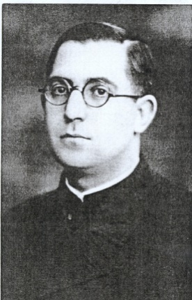

¿Quién fue?
Francisco Carceller Galindo fue un sacerdote español perteneciente a la Orden de los Clérigos Regulares de las Escuelas Pías, conocidos como escolapios. Nació en Forcall, Castellón, el 3 de octubre de 1901, dentro de una familia profundamente religiosa. Varios de sus hermanos también eligieron la vida religiosa. Desde pequeño tuvo problemas en una de sus piernas, que terminó quedándole rígida. Sin embargo, esta dificultad física no le impidió desarrollar su vocación ni dedicarse a la educación. Ingresó en las Escuelas Pías y dedicó gran parte de su vida a la enseñanza y a la formación religiosa de los jóvenes. Fue sacerdote, profesor y educador hasta su muerte en 1936.

Vida del santo
Trivia de Conocimientos Generales
1. ¿Dónde y cuándo nació Francisco Carceller Galindo?
Nació en Forcall, Castellón, el 3 de octubre de 1901Nació en Roma, Italia, el 3 de octubre de 1901
Nació en Forcall, Castellón, el 10 de octubre de 1905
2. ¿Qué demostró la limitación física que contrajo Francisco a su corta edad?
Demostró que no necesariamente impide desarrollar una vocación o realizar una tarea al servicio de los demásDemostró que impide desarrollar una vocación o realizar una tarea al servicio de los demás
Demostró que no necesariamente impide desarrollar un deporte o realizar una tarea
3. ¿A qué se dedicó y por qué se preocupó Francisco además de enseñar estando en los colegios de Barcelona?
Francisco se dedicó a la carpinteria. Se preocupaba por la formación laboral. Las fuentes señalan que era muy apreciado en su ambiente, donde lo valoraban.Francisco se dedico a ser profesor de adultos. Se preocupaba por la formación de las familias. Las fuentes señalan que era muy exigente con ellos pero apreciado, que valoraban su personalidad.
Francisco se dedicó a transmitir conocimientos y valores a los jóvenes. Se preocupaba por la formación religiosa de sus alumnos. Las fuentes señalan que era muy apreciado por los estudiantes, que valoraban tanto su personalidad como su labor sacerdotal.
4. ¿A donde fue llevado prisionero Francisco?
ZaragozaPeniscola
Castellon
5. ¿Junto a quien murió fusilado?
Isidoro Bover OliverBeato José Aparicio Sanz
Héctor Valdivielso Sáez
6. ¿Quién beatifico a Francisco Carceller y cuándo y en qué famosa ciudad?
El papa Juan Pablo III lo beatificó el 1 de octubre de 1996 en Roma.El papa Juan Pablo II lo beatificó el 1 de octubre de 1995 en Roma.
El papa Juan Pablo IV lo beatificó el 6 de noviembre de 1996 en Roma.